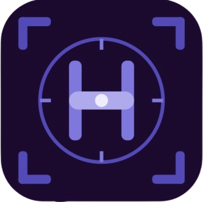

Cliptory — Clipboard History
A native, privacy-first clipboard history app with search, OCR, collections, and keyboard-first paste workflows.
View Project Page
Available Now!HunterOPS / Product index
Native tools for the repeatable annoyances that deserve better than a workaround. Built privacy-first, with no data collection, and always open to a better idea.

10 public project repositories
An expressive SwiftUI timer and stopwatch app with custom themes, alerts, and deeply personal timer controls.
View Project Page

An iOS product direction for automatically adding polished captions to video.
View Project Page
A privacy-first portfolio overview for a pet medical-records app and its product direction.
View Project Page
A local-first teleprompter and camera app for natural, on-script video recording, with replay-ready Loop Mode exports for TikTok and Reels.
View Project Page
An iPhone sound-level meter and real-time spectrum analyzer with calibration, measurement reporting, and native external microphone support.
View Project Page
A tactile counter app for rituals, goals, and countdowns, with expressive themes and feedback.
View Project Page
A native disk analyzer, cleaner, and security-triage app designed to keep every decision visible and reversible.
View Project Page
AI-assisted wardrobe planning with a smart closet, weather-aware styling, saved looks, and premium features.
View Project Page
Private, on-device Mac dictation and transcription for voice, files, and meetings.
View Project Page
A native, privacy-first clipboard history app with search, OCR, collections, and keyboard-first paste workflows.
View Project Page
Available Now!